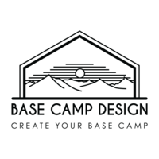

Base Camp Design
A full-service interior design studio based in Sandpoint, Idaho. Base Camp Design collaborates with clients throughout the Mountain West and beyond, providing interior design, architectural coordination, and furnishing services from concept through completion.
Visit Base Camp Design →